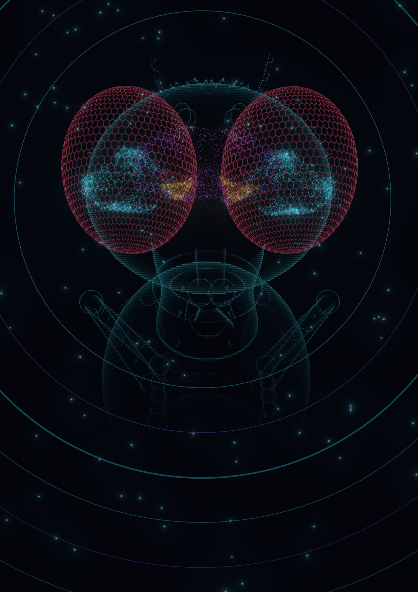
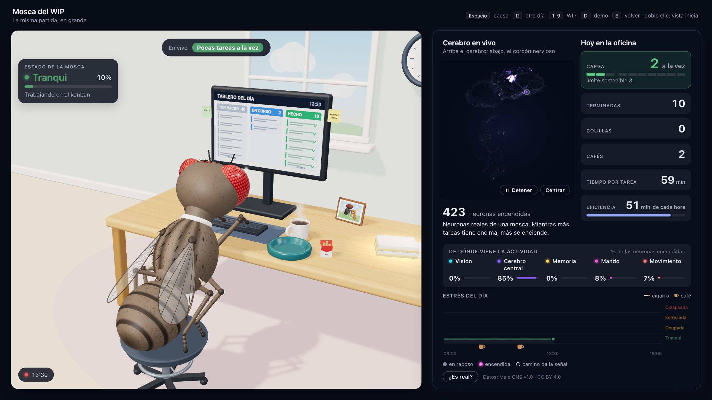
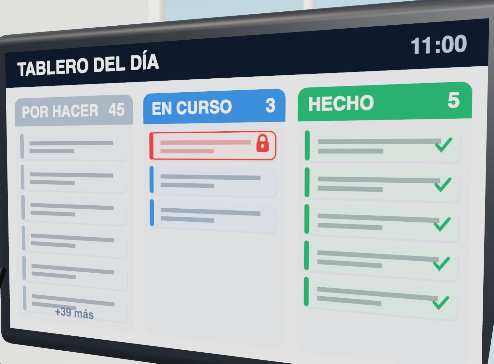
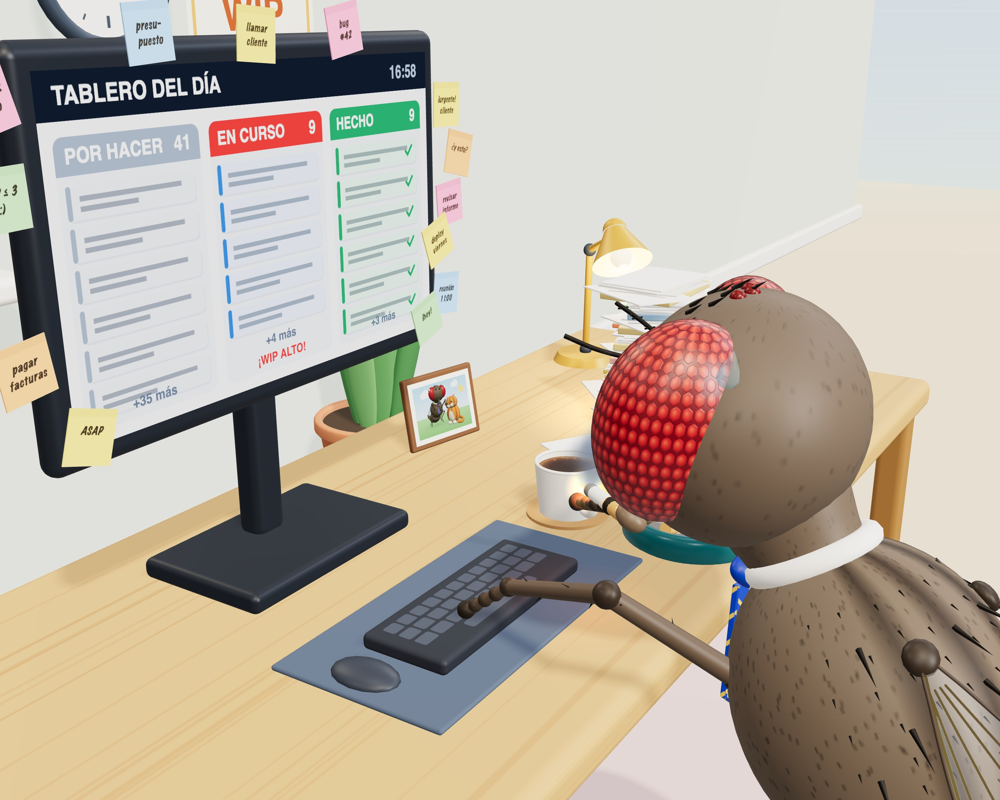
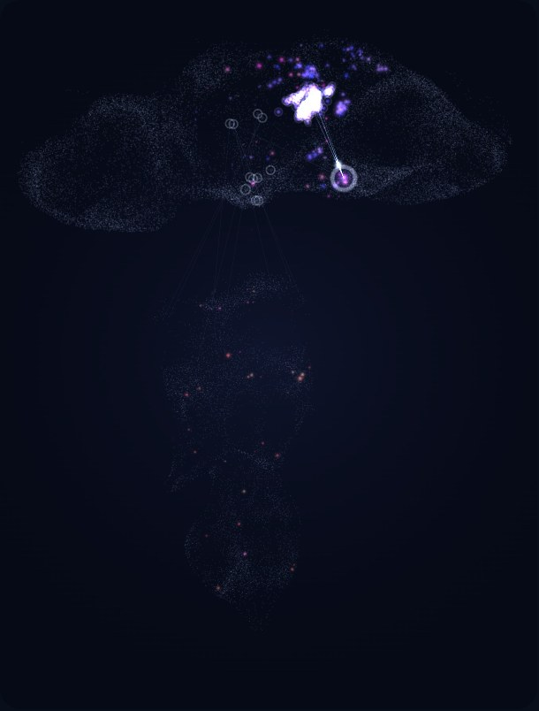
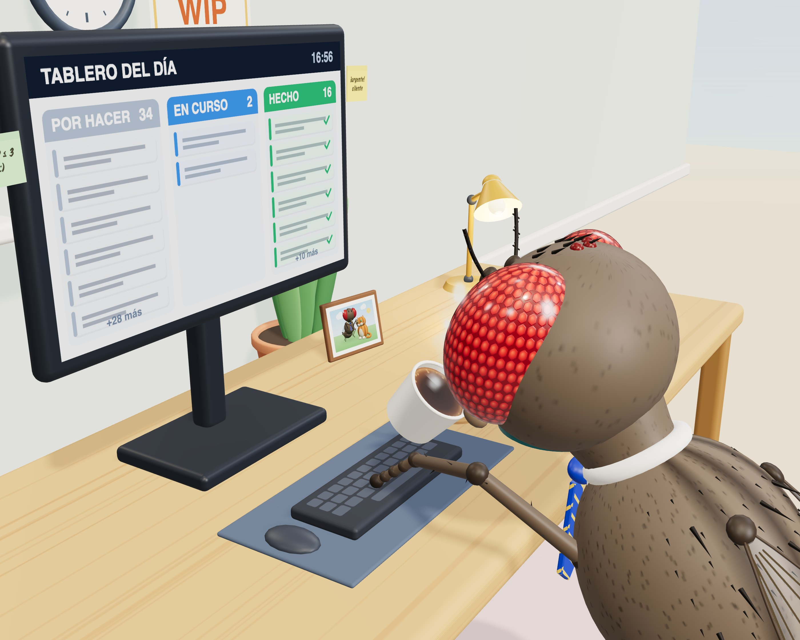

Trabajar con demasiadas cosas abiertas se siente productivo. No lo es. Este informe lo muestra con una mosca.

Qué es esto
Un juego en el navegador: una mosca oficinista, un tablero de tareas y un día de 9 a 18 que dura un minuto. Por dentro, un experimento en el computador: reglas basadas en estudios, cada una rotulada, y el cerebro de una mosca real.
Qué no es
No mide personas ni equipos: es una mosca sola, un solo día. Por eso cada número dice de dónde sale: "en el juego", "en la simulación" o "según estudios". Los números del juego salen de sus reglas; no se ajustaron para que calcen.
Si solo tienes un minuto
En el juego, la misma mosca con 2 tareas a la vez termina 18 al día y cada una tarda 1 hora. Con 9 a la vez termina 9, y cada una tarda casi 9 horas. Está en la oficina las mismas horas; la diferencia es cuánto espera cada tarea su turno: con 2, la mitad del tiempo; con 9, nueve de cada diez minutos. Sin esperas a otras personas, lo mejor sería una tarea; con esperas, un límite bajo, pero no una.
Mosca del WIP · Felipe Fernández1 / 13
La mosca y su mundo
Una mosca real en una oficina de mentira, con reglas que puedes ver
La protagonista es una mosca de la fruta, el animal más estudiado en biología. Su cerebro es real (página 9); su oficina, un juego.

Así se ve. La mosca frente a un tablero con tres columnas: Por hacer, En curso y Hecho; a la derecha, su cerebro y los números del día. Antes de empezar, alguien elige cuántas tareas puede tener en curso a la vez, de 1 a 10. En los equipos eso se llama "límite de trabajo en curso" (WIP, por su sigla en inglés).
Las reglas de su mundo, y de dónde sale cada una
Jugamos 200 días con cada número de tareas y promediamos. Los números que siguen son esos promedios, "en el juego".
Mosca del WIP · Felipe Fernández2 / 13
Un mismo día, dos veces
Misma mosca, mismas tareas: con 2 a la vez termina 18; con 9, termina 9
La única diferencia entre los dos días es el límite. Las fotos son de la misma hora: la una y media de la tarde.
Con 2 a la vez. Trabaja tranquila; el cenicero está vacío y el café humea.Con 9 a la vez. Post-its por todo el monitor, una torre de papeles, sudor y colillas.
En el juego, promedio de 200 días
2 tareas a la vez · sostenible
9 tareas a la vez · sobrecarga
Tareas terminadas en el día
18
9
Tiempo por tarea, de que empieza a que termina
1 h
8 h 54 min
Minutos de cada hora que rinden de verdad
50
25 pierde 35 de cada 60
Cigarros y cafés
0 cigarros, 5 cafés
13 cigarros, 0 cafés
Con 9 tareas estuvo en la oficina las mismas horas, ocupada casi todo el tiempo. Pero cada minuto rinde menos: salta de una tarea a otra, pierde un rato en retomar cada una y sale a fumar. Y como avanza un poquito en cada tarea por turnos, todas tardan.
Terminó la mitad, cada tarea tardó nueve veces más y cerró el día colapsada. Con 2, cerró tranquila.
Mosca del WIP · Felipe Fernández3 / 13
La paradoja
Con más tareas nunca le falta qué hacer, pero cada una pasa más tiempo esperando
Hay dos formas de ser "eficiente": que la persona esté siempre ocupada, o que el trabajo avance sin esperar. Optimizar la primera arruina la segunda.
Las dos curvas, en el juego. "Tiene con qué hacer": parte del día en que la mosca tiene alguna tarea que avanzar. "Cuánto avanza cada tarea": de todo el tiempo que una tarea pasa en curso, qué parte se trabaja de verdad; el resto espera su turno. Promedio de 200 días.
Desde 3 tareas ya tiene con qué hacer todo el día. Abrir más no la hace trabajar más: sólo pone más tareas a esperar. La teoría de las líneas de producción llama a ese punto "trabajo en curso crítico": con menos, la línea se queda sin qué hacer; con más, cada pieza sólo espera. Lo aplicamos a una persona sola, por analogía.
Tiempo por tarea, en el juego: de que empieza a que termina, en horas de oficina. Promedio de 200 días.
Que cada tarea avance menos es casi una división: el tiempo se reparte entre todas, y por eso cada una tarda más. Es matemática (la ley de Little), no un hallazgo. Lo que sí viene de las reglas del juego es que lo terminado baje pasado ese punto: la teoría sólo dice que deja de subir; la caída la ponen el costo de cambiar de tarea y los cigarros.
Las dos eficiencias: Modig y Åhlström, This is Lean (2012). El punto crítico: Hopp y Spearman, Factory Physics.
Mosca del WIP · Felipe Fernández4 / 13
Con personas reales
No es solo la mosca: jueces, reclutadores y equipos apuntan en la misma dirección
Ningún estudio da un número de tareas. Lo que dan es la dirección, y es la misma que la del juego.
Jueces italianos
Los jueces que, por el sorteo de las causas, llevaban más juicios a la vez tardaron más en cerrarlos, y la calidad de sus fallos no cambió. Más malabares, más demora, misma calidad.
Tipo: estudio de campo, una persona por caso: el más parecido a la mosca. No mide equipos. Coviello, Ichino y Persico (2014, 2015)
Reclutadores
Un poco de trabajo en paralelo ayudó a terminar más; pasado un punto, terminaron menos. Ni muy poco ni demasiado.
Tipo: estudio de campo; una relación, no una causa. No dice dónde está el punto para otros trabajos. Aral, Brynjolfsson y Van Alstyne (2012)
Equipos de investigación
Quienes estaban en muy pocos equipos a la vez, o en demasiados, rindieron menos que quienes estaban en un punto intermedio.
Tipo: estudio de campo en una organización; relación, no causa. No mide esperas ni tareas. Bertolotti y otros (2015)
Miles de equipos de software
Limitar el trabajo en curso ayuda a entregar mejor, sobre todo junto a tableros visibles y retroalimentación. Su ideal es una cosa a la vez, como un norte.
Tipo: encuesta grande; relación, no causa. No dice que el límite solo baste. DORA, capacidad "Work in process limits"
Tres estudios de campo y una encuesta. Ninguno es un experimento con equipos, y ninguno da un número. La mosca pone esa misma dirección en una pantalla, en un minuto.
Qué tan fuerte es cada tipo de evidencia, de más a menos
ExperimentoSe cambia una sola cosa a propósito y se mide. Ninguno de éstos lo es.
Campo, con causaUn sorteo decide quién recibe más: los jueces.
Campo, relaciónSe observa qué va con qué: reclutadores, equipos.
EncuestaMiles de respuestas: DORA.
SimulaciónReglas y supuestos en un computador: la mosca.
Mosca del WIP · Felipe Fernández5 / 13
El límite
El mejor límite depende de cuánto se espera: sin esperas, 1; con esperas, de 2 a 4 en la simulación
Tareas terminadas al día según cuántas tiene a la vez, en la simulación, cambiando cuántas tareas se traban esperando a otra persona: ninguna, 1 de cada 5 (el juego de hoy) y 2 de cada 5. El círculo marca el número que más termina.
↑Las esperas empujan hacia más tareasSi una tarea se traba, conviene tener otra a mano. Con una sola, cada espera es tiempo perdido: en el juego, más de 2 horas al día.
↓Cambiar de tarea empuja hacia menosCada tarea extra obliga a saltar más entre ellas, y en cada salto se pierde algo. Mientras más cuesta cambiar, menos conviene tener.

Una tarea trabada, en el juego: espera a otra persona, se pone roja y con candado, y sigue ocupando su lugar.
Probamos 20 combinaciones de reglas: esperas más o menos frecuentes y largas, cambiar de tarea más o menos caro, tareas de otros tamaños. Con esperas, el mejor límite quedó entre 2 y 4 en 16 de 17 casos. Es un resultado de la simulación, no un número científico: tu equipo tiene el suyo.
Hay una diferencia con un equipo. La mosca trabaja sola: cuando espera, no puede ayudar a destrabar. Un equipo sí, y eso aconseja DORA: no subir el límite cuando alguien queda esperando, sino atacar la espera.
Reducir las esperas permite bajar el límite; subir el límite no reduce las esperas.
Un límite sostenible, no una cosa a la vez vale cuando hay esperas que no se pueden evitar. Mientras menos esperas, más cerca de una.
Mosca del WIP · Felipe Fernández6 / 13
Sostenible
Bajar el límite no la calma al tiro: lo empezado tarda más de 2 horas en salir
Un día con diez tareas a la vez. A las 12:00 el límite baja a dos. Las diez siguen ahí: la mosca deja de tomar nuevas y cierra las que tiene.
Tareas en curso y estrés, en el juego, en un día que parte con 10 tareas a la vez y a las 12:00 baja a 2. Promedio de 300 días. Los dientes del estrés son los cigarros: alivian un rato y vuelve a subir.
Recién a las 14:35 vuelve a tener dos abiertas. Eso es lo firme: lo empezado tarda más de 2 horas en salir, y se mantiene al cambiar las reglas (de 2 h 14 min a 3 h 25 min en los cinco casos probados). Que se calme cerca de las 15:10 depende de cómo el juego sube y baja el estrés: rápido para arriba, lento para abajo, inspirado en estudios de laboratorio.
Sostenible quiere decir que se mantiene todo el día sin colapsar. El juego mide un solo día; con el mismo límite, cada mañana la mosca vuelve a empezar igual. Para los equipos, la idea tiene años:
Los procesos […] promueven el desarrollo sostenible. Los promotores, desarrolladores y usuarios debemos ser capaces de mantener un ritmo constante de forma indefinida.Principio 8 del Manifiesto […], texto oficial en español.
Según estudios, también con las horas: en fábricas de hace un siglo, bajo cierta cantidad de horas a la semana la producción subía parejo con las horas; más allá, cada vez menos (Pencavel 2015).
Mosca del WIP · Felipe Fernández7 / 13
El disfraz
La mosca no fuma: el cigarro es un disfraz de limpiarse las antenas
Una mosca real no sabe qué es una tarea. Para que su cerebro "sienta" la carga de trabajo, traducimos la oficina a algo que sí siente, y de vuelta.
En la oficinaTareas abiertasMás tareas a la vez, más fuerte la molestia.
→
En la moscaTacto en la antenaComo polvo. La señal recorre su cerebro real y enciende el circuito con que se limpia las antenas con las patas.
→
De vuelta a la oficinaEl cigarroLimpiarse se dibuja como salir a fumar. En su cerebro se enciende el circuito; cuántos cigarros, lo decide el juego.
En la oficinaUna pausa, sin mucho estrés
→
En la moscaAzúcar en la trompitaSacar la trompita para comer. En la simulación la señal no alcanzó a moverla.
→
De vueltaEl café, sólo ilustrativoNo lo presentamos como real.
Sólo esos dos estímulos; no usamos dolor ni ningún otro. Y un detalle: a una mosca cubierta de polvo, según estudios, se le ve limpiarse primero los ojos y después las antenas. Nosotros sólo tocamos la antena.

Con nueve tareas, a media tarde. Lo que en el juego es un cigarro, en su cerebro es la orden de limpiarse las antenas.
Para las personas, según estudios: fumar no calma, da un alivio breve y un rebote (Parrott 1999), y quienes dejan de fumar quedan con menos estrés (Taylor 2014). El café del juego sólo aparece cuando no está muy estresada, porque la cafeína sube la hormona del estrés (Lovallo 2005, 2006); lo que ayuda es la pausa, no la cafeína (Albulescu 2022).
Mosca del WIP · Felipe Fernández8 / 13
El cerebro
Su cerebro es real y se enciende más con más tareas, pero no prueba ninguna lección de oficina

2 tareas a la vez: 423 neuronas encendidas, en la simulación.9 tareas a la vez: 1.328 encendidas, tres veces más. Arriba el cerebro; abajo, el cordón nervioso que lleva las órdenes al cuerpo.
El mapa es real. Un proyecto científico público trazó el sistema nervioso completo de una mosca macho: 166.700 neuronas, cada una en su lugar y con sus conexiones. Simulamos 164.587, las que tienen sus conexiones completas.
Cada neurona se simula como un vaso con un agujerito. Se llena con las señales que le llegan, se vacía solo de a poco y, al llegar a la marca, se vuelca de una vez y pasa agua a las siguientes. Algunas señales sacan agua en vez de echarla. Ese modelo acertó 9 de cada 10 predicciones probadas en moscas vivas, en otro mapa (Shiu y otros, 2024). Nosotros lo usamos en este mapa, con otro ajuste y sin probarlo en moscas.
En la simulación: con 2 tareas la señal casi no llega a las neuronas que mueven el cuerpo; con 9, enciende 65. Incluso con 10 se enciende menos del 1 % del cerebro. Y una prueba de control: con las conexiones barajadas al azar, la limpieza desaparece. Sale del mapa real.
Lo que no prueba. Que las tareas sean polvo en la antena lo elegimos nosotros. El cerebro muestra cómo reacciona una mosca a esa molestia; no decide nada del juego ni demuestra sus lecciones.
Mosca del WIP · Felipe Fernández9 / 13
Qué hacer con esto
Un límite sostenible, no una cosa a la vez
Cuatro pasos para probarlo con un equipo.
1
Pongan el trabajo a la vista
Un tablero con tres columnas basta: por hacer, en curso, hecho. Lo que no se ve no se puede limitar.
2
Cuenten lo abierto y pónganle un límite
Cuenten cuántas cosas tiene abiertas cada persona hoy. Acuerden un límite bajo, escríbanlo en el tablero y respétenlo; con esperas inevitables, no una.
3
Cuando alguien queda esperando, ataquen la espera
No abran otra cosa para "aprovechar el tiempo": ayuden a destrabar lo que espera. Con menos esperas, el límite puede bajar.
4
Prueben dos semanas y midan
Cuántas tareas se terminan por semana, cuánto tarda cada una, cuánto hay abierto y cuánto espera cada tarea. Comparen con las dos semanas anteriores; lo empezado tarda en salir.

Fin de un buen día, en el juego: dos tareas abiertas, la columna Hecho llena y el café todavía caliente.
Limitar el trabajo en curso es uno de los hábitos de los equipos de alto desempeño, no el único: ayuda sobre todo con un tablero visible y mirando los resultados cada semana. El juego no dice cuál es tu número: la mosca es una persona sola; un equipo se pasa trabajo y se ayuda.
Estar siempre ocupado no es lo mismo que avanzar.
Mosca del WIP · Felipe Fernández10 / 13
Anexo A ·¿Es real?
Qué es matemática, qué es estudio y qué pusimos nosotros
Cada afirmación del informe, con su origen. La respuesta corta: la dirección tiene respaldo; los números son del juego.
Lo que decimos
Qué es
Por qué
Los límites de este experimento
Una mosca sola. No mide traspasos ni ayuda entre personas.
Un solo día. El cansancio de una semana no está en el juego.
No mide personas. Es un experimento en el computador; una prueba con equipos de verdad sería otro proyecto.
El cerebro no decide. Muestra cómo reacciona una mosca a una molestia; las reglas del juego son nuestras.
Mosca del WIP · Felipe Fernández11 / 13
Anexo B ·Los números
Los resultados no dependen de un número elegido a dedo
Todo sale del mismo juego: 200 días por cada número de tareas, y después lo mismo cambiando las reglas una por una.
Un día de la mosca según cuántas tareas tiene a la vez (promedio de 200 días)
Tareas a la vez
Terminadas
Tiempo por tarea
Rinden, de cada hora
Tiene con qué hacer
Cuánto avanza cada tarea
Cigarros
Cafés
Estrés al cerrar
Verde: el número que más termina (sostenible). Rojo: sobrecarga, el día de las fotos. Tiempo por tarea en horas de oficina, de que empieza a que termina.
Cambiando las reglas: con cuántas esperas, qué límite conviene
Tareas que se traban esperando a otra persona
Mejor límite con las reglas de hoy
Si cambiar de tarea no costara nada
Si costara mucho más
Tiene con qué hacer todo el día desde
El mejor límite y, entre paréntesis, los que terminan casi lo mismo. En 16 de los 17 casos con esperas el mejor quedó entre 2 y 4; sin esperas, 1. Bajar de 10 a 2 tareas a las 12:00 tardó de 2 h 14 min a 3 h 25 min en volver a 2 abiertas, en los 5 casos probados.
Cómo se probó
Antes de correr cada prueba se dejó escrito qué se iba a medir y qué contaría como "se cumple". Los controles se corrieron primero y dieron lo esperado. Ningún número se ajustó después de ver los resultados.
Mosca del WIP · Felipe Fernández12 / 13
Anexo C ·Fuentes y créditos
De dónde sale cada idea
Sólo fuentes que verificamos. Respaldan la dirección del juego, no sus números.
Flujo y colas
Más tareas abiertas, más tiempo por tareaSi sale lo mismo y hay más adentro, cada una demora más. Es un teorema. Little (1961), Operations Research, 9(3).
Las dos eficienciasEstar ocupado o que el trabajo fluya. Libro de divulgación, no un estudio. Modig y Åhlström (2012), This is Lean.
El trabajo en curso críticoPasado cierto punto, más trabajo abierto sólo alarga la espera. Hopp y Spearman, Factory Physics.
Personas y equipos
Jueces: más malabares, más demoraCon más causas a la vez, cada una tardó más; la calidad no cambió. Coviello, Ichino y Persico (2014), American Economic Review, 104(2); (2015), J. of the European Economic Association, 13(5).
Reclutadores: ni muy poco ni demasiadoAral, Brynjolfsson y Van Alstyne (2012), Information Systems Research, 23(3).
Equipos a la vez: un punto intermedioBertolotti y otros (2015), Research Policy, 44(4).
Los límites ayudan, con tablero y retroalimentaciónNo subir el límite cuando alguien espera: ayudar a destrabar. DORA, dora.dev/capabilities/wip-limits (CC BY 4.0).
Ritmo sosteniblePrincipio 8 del Manifiesto […], texto oficial en español. […].org/iso/es/principles.html
Horas largas rinden cada vez menosObreras de fábricas de municiones, 1914–1918. Pencavel (2015), The Economic Journal, 125(589).
Cambiar de tarea, estrés, tabaco y café
Cada cambio de tarea cuestaDécimas de segundo que se suman. La tabla "20 % por proyecto" es una regla práctica, no una medición. Rubinstein, Meyer y Evans (2001), J. of Experimental Psychology: HPP, 27(4). Weinberg (1992).
Lo que queda a medias sigue en la cabezaLeroy (2009), Organizational Behavior and Human Decision Processes, 109(2).
Las interrupciones estresanLos interrumpidos trabajaron más rápido, pero con más estrés. Mark, Gudith y Klocke (2008), CHI '08.
El estrés sube rápido y baja lentoLa hormona del estrés llega a su pico en 20 a 40 minutos, en el laboratorio. Dickerson y Kemeny (2004), Psychological Bulletin, 130(3).
Fumar no calmaParrott (1999), American Psychologist, 54(10). Taylor y otros (2014), BMJ, 348.
La pausa ayuda; la cafeína sube el cortisolAlbulescu y otros (2022), PLOS ONE, 17(8). Lovallo y otros (2005), Psychosomatic Medicine, 67(5); (2006), Pharmacol. Biochem. Behav., 83(3).
La mosca y su cerebro
Cómo se limpia las antenasSensores en la antena, neuronas de relevo y las que dan la orden a las patas. Con polvo, primero los ojos. Hampel y otros (2015, 2020), eLife. Seeds y otros (2014), eLife.
Simular el cerebro con su mapaUn modelo simple sobre el cableado real acertó 9 de cada 10 predicciones probadas. Shiu y otros (2024), Nature, 634.
El mapa de la mosca macho166.700 neuronas del sistema nervioso central. Berg y otros (2026), Cell, 189(18).
Datos del cerebro: Male CNS v1.0. This project is a collaboration between FlyEM (HHMI Janelia), the University of Cambridge (Dept. of Zoology), the MRC Laboratory of Molecular Biology, and Google Research.The Male CNS dataset is licensed under CC-BY. Licencia CC BY 4.0 · male-cns.janelia.org.
Imágenes: todas son del juego Mosca del WIP y de su arte de portada. Autor: Felipe Fernández, octubre de 2026.